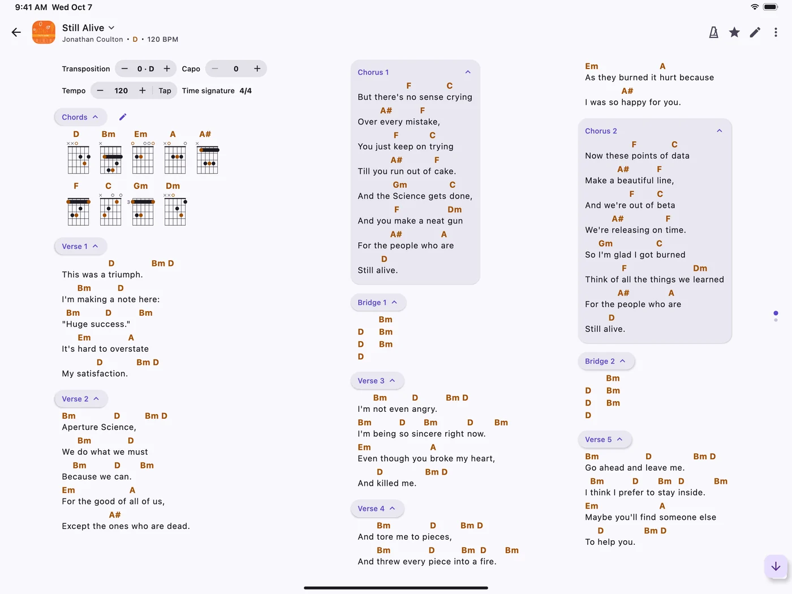
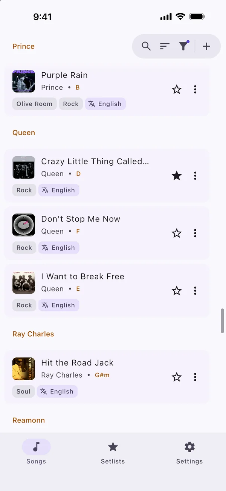
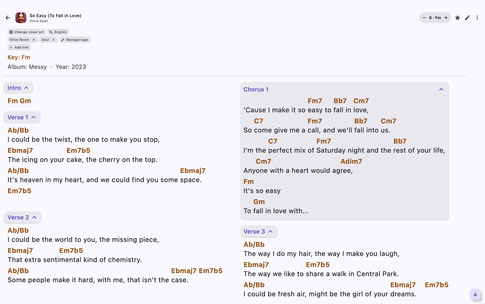
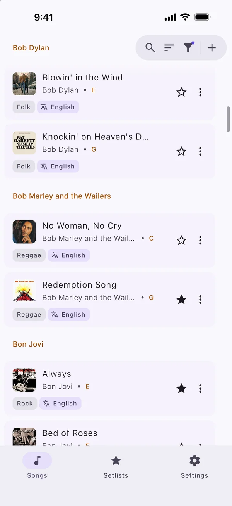
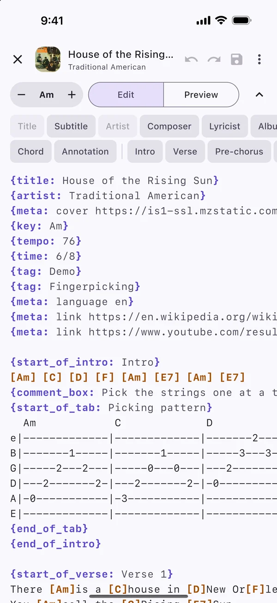
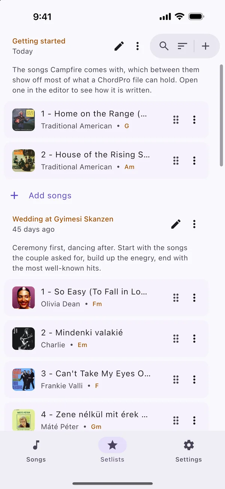
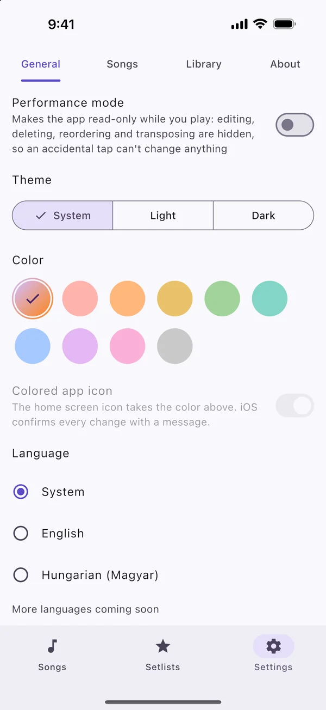

A modern songbook for lyrics and chords.
Campfire is a free, lightweight app that keeps your songs in one place and lays them out to fit whatever screen you’re playing from. Find a song, make it your own, put it in a setlist and play.


On all your devices
Phones, tablets, computers and the browser, with optional sync.
Works offline
Songs are stored on your device, so no signal is needed to play.
Clean and customizable
An uncluttered interface, light or dark, in whichever color you like.
Free and open source
No ads, tracking, account or library limits, and the code is on GitHub.
Laid out for the way you play.
Pick a text size and Campfire fits the columns to your screen. Long songs flow sideways, so each verse stays easy to follow.
Switch to lyrics only and the chords get out of the way, leaving just the words for the singers. Forgot how it goes? Your links to the original recording are right there with the song.

What’s in it
Everything a songbook needs, and nothing that gets in your way.
-
Search and filter
Search by title, artist or tag, with the closest matches first, and narrow the list by tag or language.
-
Tags
Make your own labels for genres, moods or songs to practice, and put them on any song.
-
A proper editor
Write songs with shortcuts for chords and sections, undo and redo, and a live preview. On a bigger screen, edit and preview side by side.
-
Dropbox sync
Connect your own Dropbox and your songs and setlists stay the same on every device. It’s optional, and your library stays on your device either way.
-
Transposition
Move the chords up or down while you play, without rewriting the song. Campfire remembers the key for next time.
-
Setlists
Put songs in order, add a note, and play the whole set as one long page. A foot pedal can step through it.
-
PDF export
Export your songs as PDF to print a copy for your music stand or share with someone playing along.
-
Import, export and share
Share songs and setlists with other musicians, import text, ChordPro, PDF files, Word documents or zip archives, and export your whole library for a backup.
A look around
The same screens on a phone, a tablet and a computer.




Your songs are just text files.
Campfire reads and writes ChordPro, a plain text format with chords in brackets. Import files or a zip you already have, and export everything whenever you like.
# Raw .cho file
{title: House of the Rising Sun}
{artist: Traditional American}
{start_of_verse}
There [Am]is a [C]house in [D]New Or[F]leans
They [Am]call the [C]Rising [E7]Sun
{end_of_verse}
House of the Rising Sun
Traditional American
Verse
Get Campfire
It’s a quick download on every platform, or you can just open it in your browser.